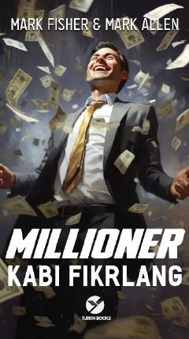

MKMillionerlar kabi fikrlab, moliyaviy erkinlik va muvaffaqiyatga erishing.
Kitob muvaffaqiyat va boylikka erishishning asosiy tamoyillarini o'rgatadi. Muallif Mark Fisher va Mark Allen o'quvchilarga millionerlar kabi fikrlash, o'z ishini sevish va maqsadga intilish orqali moliyaviy erkinlikka erishish yo'llarini ko'rsatadi. Kitobda real hayotiy misollar va amaliy maslahatlar orqali har bir inson o'z hayotini yaxshilashi mumkinligi isbotlanadi.